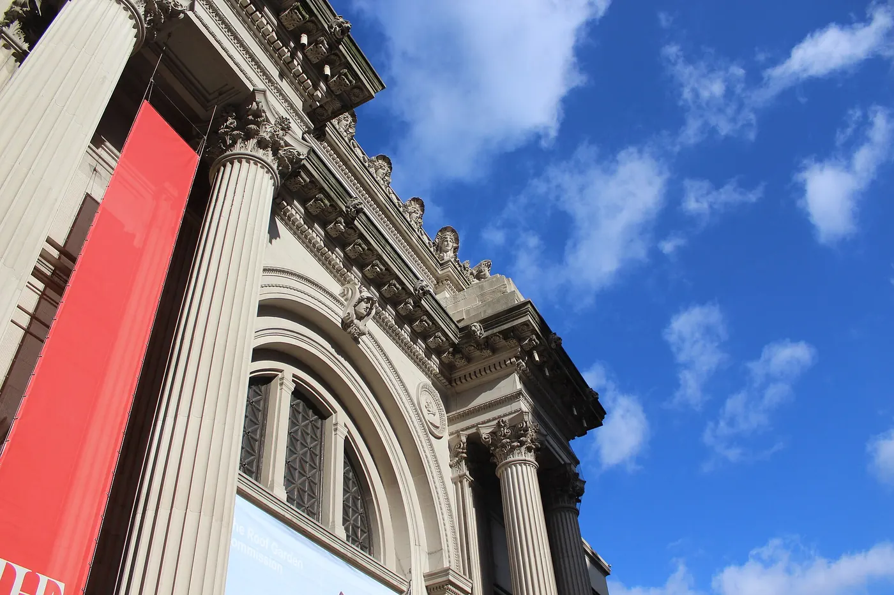
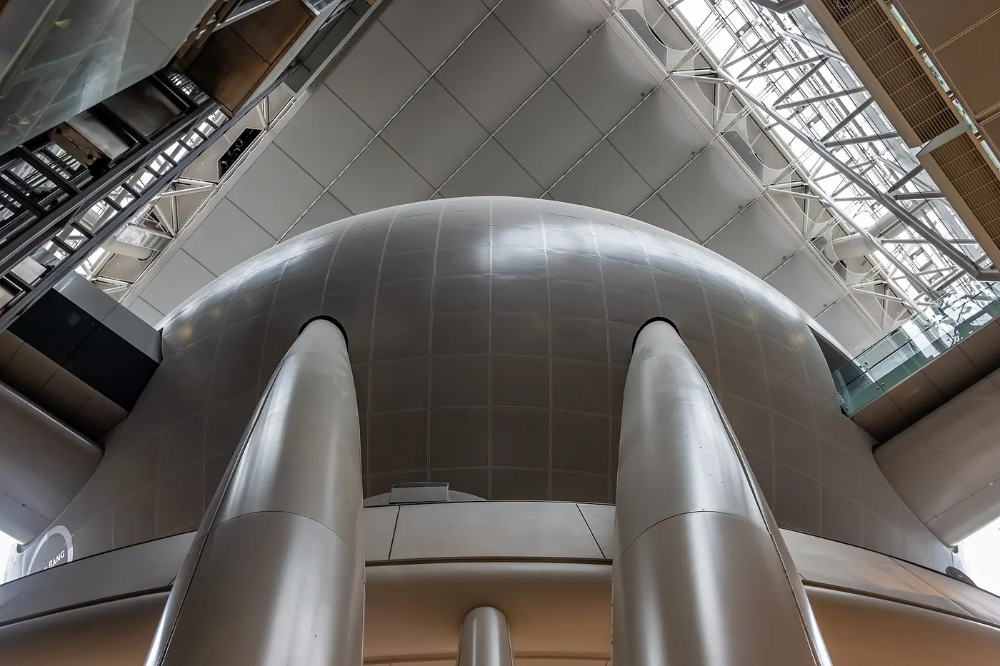

The Met, without trying to see everything
The Metropolitan Museum of Art is one of the great museums on earth, and that is precisely the problem: it is too large to finish. The visitors who enjoy it most arrive with a short list, use the late nights and accept that they will come back.
Checked 2 November 2026. Prices, opening hours and transport details were verified against official sources. Things change — confirm before you book. How we check.

A collection that spans everything, in a building to match
The Met's great advantage over other museums is range: Egyptian, Greek and Roman, European painting, Asian art, American rooms, arms and armour. Whatever you already like, there is a wing for it, usually a short walk from the last one.
The building sits on the eastern edge of Central Park, which makes it one of the easiest major sights to combine with a park morning. It is also the reason to keep the visit to three hours: the galleries are long, the floors are hard, and the light outside is often better than the fifth room of paintings.
The Met and the Cloisters share one ticket, valid for three days, but they sit in different parts of Manhattan. Do not try to see both in one day: the Cloisters deserves its own quiet morning in Fort Tryon Park, and it is closed on the same weekday as the main building.
Three reasons to give it a careful half-day
The range, the late nights and the second building included in the ticket.
The breadth is the point
Nowhere else in New York lets you move from an Egyptian temple to a Dutch interior in ten minutes. Pick two wings, not ten, and let the range be the pleasure rather than the task.
Friday and Saturday nights are quieter
The Met stays open until 9pm on Friday and Saturday, and after 6pm the galleries thin out. It is the best evening museum experience in the city.
One ticket, two buildings, three days
Your ticket includes the Cloisters in Fort Tryon Park, and you have three days to use it. Keep the sticker and save the second visit for a separate morning.
How to book the Met and get in
Admission is sold online and at the door for the same price. The difference is the queue on holiday weekends, and the risk of arriving on a Wednesday.
- Check the day before anything else: the Met is closed on Wednesdays, and the Cloisters follows the same closure.
- Buy a timed ticket on metmuseum.org if you are visiting at a weekend or around a public holiday. Weekday entry is usually quick at the door.
- Enter through the main Fifth Avenue entrance at 82nd Street. Bag check is free and mandatory for large bags, so allow ten minutes for security.
- New York State residents pay what they wish with proof of ID, and students from New York, New Jersey and Connecticut qualify too. Everyone else pays the published admission.
- Keep the admission sticker: it covers the Cloisters for three days including the day of your visit.
Book on metmuseum.org
Tickets are sold on the museum's own site, which also lists the current opening hours, the Roof Garden season and the Cloisters. Buy direct and skip the third-party sites that add a booking fee.
Plan your visit at metmuseum.orgOfficial museum site. Hours and holiday closures can change; check before you travel.
What most visitors get wrong
-
01
Go late on a Friday
Friday and Saturday openings run to 9pm. Arrive after 6pm and you get the European paintings with room to stand back from them.
-
02
Check the Roof Garden season
The Roof Garden is seasonal, usually May to October and weather-dependent. It is a good bonus, not a reason to plan a whole trip around.
-
03
Do not pair it with the Cloisters
The ticket covers both for three days, but they are miles apart. Give the Cloisters its own morning in Fort Tryon Park.
-
04
Pay what you wish only if you qualify
That applies to New York State residents and to students from New York, New Jersey and Connecticut, with ID. Everyone else should budget from $30.

Nearby and worth your time

Central Park
The Met backs onto the park. Walk south to the Bow Bridge before or after your slot.

American Museum of Natural History
The other half of Museum Mile's big two, on the park's western side.

The Upper East Side
Where to walk, eat and stay around Museum Mile.
Questions people ask
How much does The Met cost?
Admission is from $30 for adults, $22 for seniors and $17 for students. New York State residents can pay what they wish with proof of address, and local students qualify on the same basis. Check the official site before you travel.
What day is The Met closed?
The Met is closed on Wednesdays. It also closes on public holidays, including Thanksgiving and 25 December. Check the official site for current hours and the full holiday closure list before you set out.
How long do I need for The Met?
Three to four hours is enough for a rewarding visit, as long as you pick two or three wings rather than trying to cover the building. The Cloisters takes another hour and a half to two hours on a separate visit.
Does one ticket cover the Cloisters?
Yes. One admission covers both The Met and the Cloisters for three days, including the day of your visit. They are in different neighbourhoods, so do not try to pair them on the same day.
When is the quietest time to visit?
Weekday mornings at opening are calm, and Friday or Saturday after 6pm is the best evening window because the museum stays open until 9pm. Weekends before lunch are the busiest.